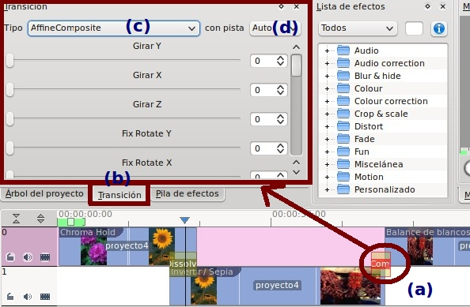

1. Transiciones en Kdenlive
Primeramente, para añadir transiciones entre nuestros clips debemos colocar nuestros clips en la línea de tiempo:
- Alinearlos (2)
- Soprepuestos o poner uno encima del otro en la línea de tiempo en diferentes pistas (1)
Disponemos, básicamente, de dos opciones para añadir las transiciones:
- hacer clic en la pestaña verde que aparece en la zona derecha inferior del clip
- menú contextual o menú emergente (botón derecho del ratón)
Con esta opción nos ubicamos en el clip de la transición (1) / botón derecho / añadir transición (2) y seleccionamos la transición deseada (3).
Una vez añadida una transición, por defecto añade una de ellas, podemos modificar la misma para ello seleccionamos la transición (a) y, en la pestaña de transiciones (b):
- Seleccionamos la transición deseada en el menú desplegable (c)
-
Podemos indicar con cual de las pistas (d) queremos hacer la transición. Por defecto es Auto y es con todas los clips de todas las pistas existentes en la zona de tiempo de la transición seleccionada.

Jo.R.C.A. 2004 - 2011

Edición de Audio y Video con Software Libre by José Ramón Cerdeira Alonso is licensed under a Creative Commons Reconocimiento-No comercial-Compartir bajo la misma licencia 3.0 España License